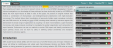

You use these tabs to access the editing and reviewing tools or to invite collaborators into the editing process.
If you are an author or collaborator, most of your work will be in the Editor tab. You can cut, copy, and paste from the Clipboard, change formatting, create and edit lists, add special characters and equations, and perform other editing tasks. You can also insert comments, attachments, footnotes, links, citations, references, and metadata. Each task has its own Help topic.
Click a link below for instructions.
| Simple Editing | Inserting and Deleting Text | Formatting Text | Lists |
| Symbols | Equations | Footnotes | Links |
| Citations | References | Metadata | Insert a Section |
| Add File Attachments | Add Comments | Figures | Tables |
Note: You cannot make text edits in Review modeIn this mode you can review and accept or reject any edits made to an article. and you cannot undo or redo any editing actions.
In Review mode you can look at each change and accept or reject it.

If you haven't collaborated with anyone, your changes are automatically accepted. If you do have collaborators, you can accept or reject each change individually.
You use the Collaboration tab to invite authors to work on your article. For more information and procedures, see Collaboration.
edrevtabs.htm | Copyright © 2015 Dartmouth Journal Services All Rights Reserved.
{kind=link}